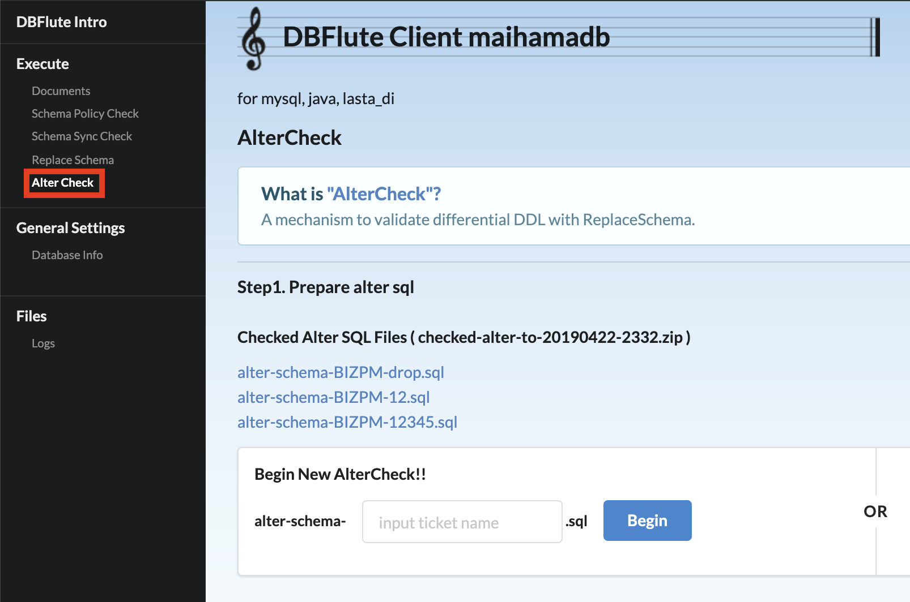
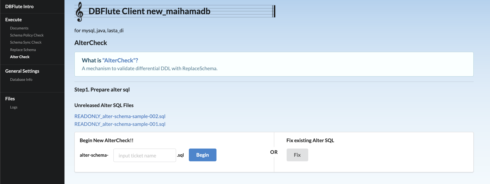
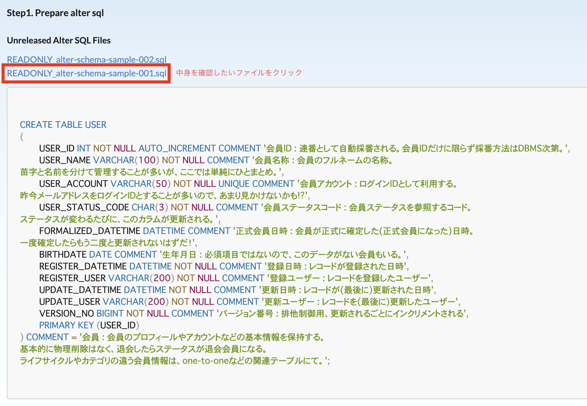
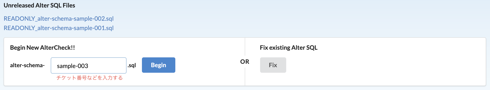
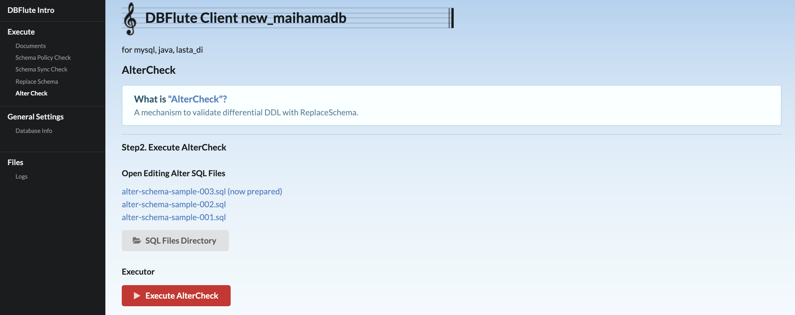
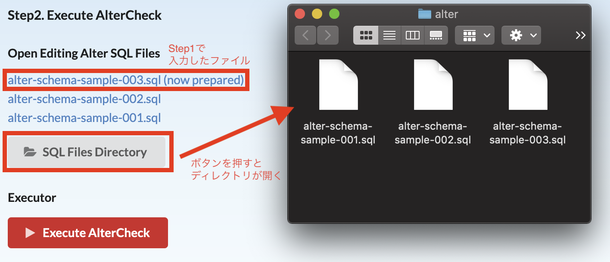
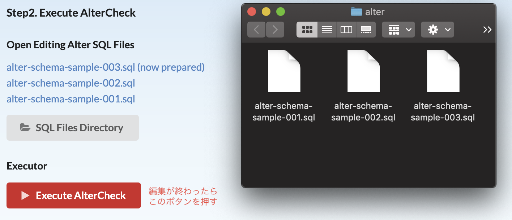
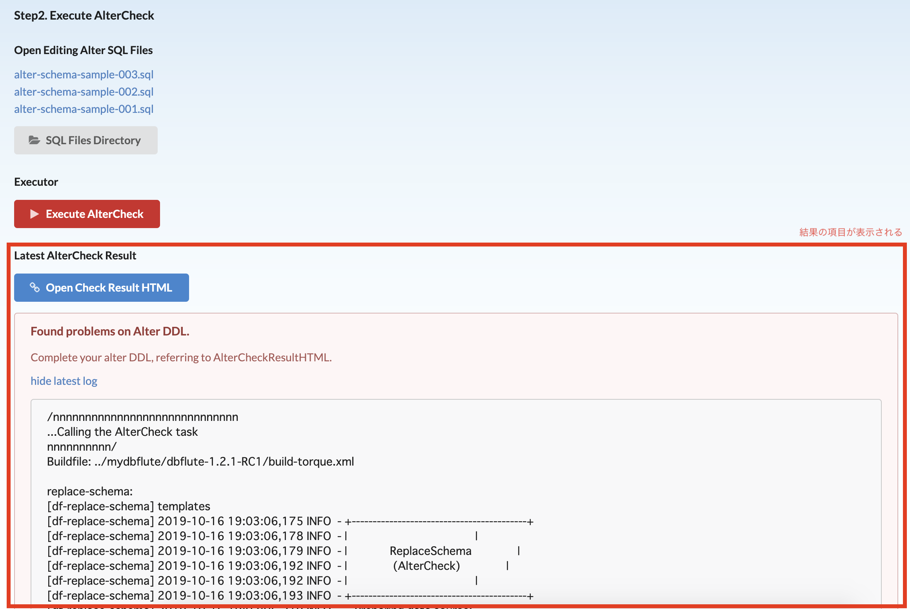

AlterCheck を Intro で
AlterCheckとは？
DB変更を加えるときに、差分DDLが妥当かどうかをReplaceSchemaを利用して検証するDBFlute Engineの機能です。AlterCheckそのものの詳しい内容はこちらをお読みください。
AlterCheckの画面はどこにある？
サイドメニューにある、「AlterCheck」リンクからAlterCheck画面に移動することができます。
AlterCheck画面 
{kind=link}
操作の流れ
AlterCheckは大きく分けて2つのステップに分かれています。
- DBFlute Introを起動
- Step1. AlterCheckの下準備をする
- Step2. AlterCheckを実行する
DBFlute Introを起動
manage.sh|bat の 88 (intro) を実行して、Introを起動しましょう。
Step1. AlterCheckの下準備をする
この画面で行う操作は2つあります。
- リリース前のAlterDDLを確認する
- AlterCheckの準備をする
Step1画面 
{kind=link}
リリース前のAlterDDLを確認する
Step1の画面で表示されているのは、（他の人が作業した）未リリースでチェック済みのAlterDDLの一覧です。 ファイル名をクリックすることで、AlterDDLの中身を確認することができます。この時点で、自分の入れたいDB変更がすでに入っていないか（重複していないか）確認してください。
Step1画面でリリース前のAlterDDLの中身を確認する 
{kind=link}
GUIで操作する以上、あまり意識する必要はありませんが、表示しているAlterDDLの実態となるファイルは以下のディレクトリに配置されているものです。
unreleased-checked-alter 配下にあるファイルは、SQLファイルのみ表示しています。
AlterDDLの保存場所
dbflute_yourdb
|-playsql
|-migration // AlterCheck用のディレクトリのトップ
|
|-history // AlterCheckのSQLファイルの履歴ディレクトリ
|-[日付]
| |
| |-[日時]
| | // 未リリースでチェック済みのAlterDDL @until DBFlute-1.2.0
| |-checked-alter...zip
|
| // 未リリースでチェック済みのAlterDDL @since DBFlute-1.2.1
|-unreleased-checked-alter
|-DONT_EDIT_HERE.dfmark
|-for-previous-20120804-1746.dfmark
|-READONLY_alter-schema.sql
|-READONLY_alter-schema-[チケット番号].sql
AlterCheckの準備をする
新たにDB変更を加えAlterDDLを作成したい場合は、作成するAlterDDLのファイル名を入力して、Beginボタンを押してください。
リリース前のSQLを修正したい場合は、Fixボタンを押してください。
この操作を行うと、DBFluteクライアントプロジェクト内部でAlterCheckをする準備が整い、Step2に進みます。
Step1画面でAlterCheckの準備をする 
{kind=link}
Step2. AlterCheckを実行する
この画面で行う操作は3つあります。
- AlterDDLを編集する
- AlterCheckを実行する
- AlterCheck失敗の理由を確認する
Step2画面 
{kind=link}
AlterDDLを編集する
Step2画面では、編集中のAlterDDL一覧が表示されています。 (now prepared) と末尾に書かれているファイルが、Step1でファイル名を入力することで作成されたファイルです。
編集中のAlterDDLが格納されているディレクトリをみなさんのOSに搭載されているファイルエクスプローラで開くには、SQL Files Directory ボタンを押します。
ここから、任意のエディタを利用して、AlterDDLを編集してください。
Step2画面でAlterDDLを編集する（Macの例） 
{kind=link}
ボタンを押すと開くディレクトリの場所
dbflute_yourdb
|-playsql
|-migration // AlterCheck用のディレクトリのトップ
|-alter // AlterDDLを書くディレクトリ (一時作業領域なのでgitignore推奨)
|-alter-schema.sql
|-alter-schema-[チケット番号].sql
AlterCheckを実行する
AlterDDLの編集が終わったら、Execute AlterCheck ボタンを押してください。 確認ダイアログが表示され、OKボタンを押すとAlterCheckを実行されます。 AlterCheckが正常に終わった場合に、Step1画面に自動的に戻ります。
Step2画面でAlterDDLを実行する（Macの例） 
{kind=link}
AlterCheck失敗の理由を確認する
AlterCheckに失敗した場合、失敗した理由を確認し、再度AlterDDLを修正しなければなりません。 修正の鍵となる2つの情報がStep2画面上から確認できます。これらの情報はAlterCheckが失敗したあとから確認できるようになります。
- Check Result HTML
- AlterCheckの最終実行ログ（AlterCheck失敗ダイアログに表示されていたもの）
AlterCheck失敗理由の確認 
{kind=link}
Step1画面に戻ったら...
晴れてAlterCheckがうまくいきました！！
またDB変更をする場合は、Step1画面から作業を繰り返してください。